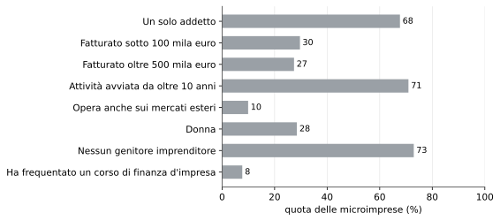
L’alfabetizzazione finanziaria delle microimprese italiane
Conoscenze solide, un rapporto passivo con la banca, un’esposizione ai rischi di coda non coperta. Ricalcoli sui microdati dell’indagine 2025 della Banca d’Italia
Imprese
Educazione finanziaria
Banca d'Italia
Microimprese
L’indagine 2025 della Banca d’Italia sull’alfabetizzazione finanziaria dei titolari di microimpresa, condotta su cinquemila imprenditori, restituisce un segmento con conoscenze finanziarie superiori a quelle della popolazione adulta e privo di divario di genere.
Paolo Volterra ![]()
Sommario
L’indagine 2025 della Banca d’Italia sull’alfabetizzazione finanziaria dei titolari di microimpresa, condotta su cinquemila imprenditori, restituisce un segmento con conoscenze finanziarie superiori a quelle della popolazione adulta e privo di divario di genere. Il ricalcolo sui microdati conferma i risultati pubblicati e ne mette a fuoco tre. Primo: la forza è nella gestione finanziaria interna dell’impresa, la debolezza nel rapporto con il sistema bancario, dove poco più della metà dei titolari dichiara di negoziare le condizioni anziché accettare le soluzioni proposte, e nella previdenza, su cui solo la metà ha un piano. Secondo: le microimprese sono assicurate contro i rischi ordinari ma scoperte su quelli di coda, dal danno climatico all’interruzione dell’attività; quando l’evento climatico si verifica, la risposta più frequente dopo l’indennizzo assicurativo è la riduzione della remunerazione del titolare. Terzo: sul territorio il punteggio di alfabetizzazione è pressoché uniforme, mentre l’accesso al credito bancario resta nettamente più basso nel Mezzogiorno, indicazione che in quelle aree il vincolo non è la competenza della domanda.
Parole chiave
alfabetizzazione finanziaria, microimprese, credito alle imprese, finanza digitale, intelligenza artificiale, rischio climatico, Banca d’Italia, Mezzogiorno
1 L’indagine
Nel 2025 la Banca d’Italia ha intervistato cinquemila titolari di microimpresa — imprese con meno di dieci addetti — per misurarne l’alfabetizzazione finanziaria e le competenze di finanza digitale [1]. È la seconda edizione di una rilevazione avviata nel 2021 [2], ampliata con sezioni dedicate agli strumenti di pagamento, ai prodotti finanziari e assicurativi, all’adozione delle tecnologie digitali e alle strategie di adattamento ai rischi climatici.
L’alfabetizzazione finanziaria è definita, seguendo lo standard OCSE per le piccole imprese [3], come la combinazione di conoscenze, comportamenti e atteggiamenti che consente di prendere decisioni finanziarie efficaci nella gestione di un’attività. L’indagine la misura con otto domande sui concetti, otto sui comportamenti e tre sugli atteggiamenti.
I dati elementari dell’indagine sono pubblici [4]. Le elaborazioni che seguono li ricalcolano applicando i pesi campionari di post-stratificazione, seguendo per la costruzione dei punteggi i criteri della nota metodologica [5]; i valori coincidono con quelli del rapporto ufficiale.
2 Il profilo del titolare medio
Il campione è dominato dalle imprese individuali: circa due terzi hanno un solo addetto e quasi tre quarti dei titolari non provengono da una famiglia con esperienza imprenditoriale. Sono attività consolidate — sette su dieci sono in esercizio da oltre dieci anni — e di piccola dimensione, con circa un terzo sotto i centomila euro di fatturato. Meno di uno su dieci esporta. Le donne sono poco meno di un terzo dei titolari. La formazione finanziaria è quasi sempre appresa sul campo: solo l’otto per cento ha frequentato un corso dedicato alla gestione finanziaria di un’impresa.
Ne emerge il ritratto di un’impresa che gestisce con ordine la propria finanza interna, si finanzia in prevalenza con risorse proprie, tratta poco con la banca, è coperta contro i rischi ordinari ma non contro quelli di coda, usa il digitale di base e non ha ancora adottato l’intelligenza artificiale. Le sezioni seguenti documentano ciascuno di questi tratti.
3 Le tre dimensioni dell’alfabetizzazione
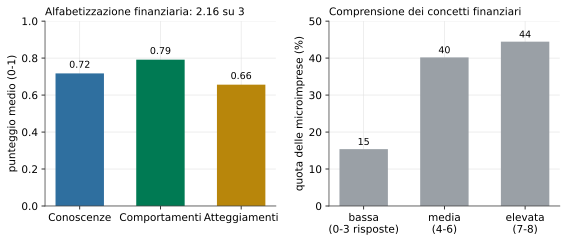
Il punteggio complessivo è pari a 2,17 su 3, circa tre quarti del massimo. Rispetto al 2021 è in lieve miglioramento, di circa due punti percentuali sulle domande confrontabili, e l’aumento è attribuibile alle componenti dei comportamenti e degli atteggiamenti, non alle conoscenze [1]. Sui concetti di base, il 45 per cento dei titolari risponde correttamente ad almeno sette domande su otto; il 15 per cento si ferma a non più di tre. Sulle domande confrontabili con la rilevazione condotta sulla popolazione adulta, i microimprenditori mostrano una quota di risposte corrette più alta [6].
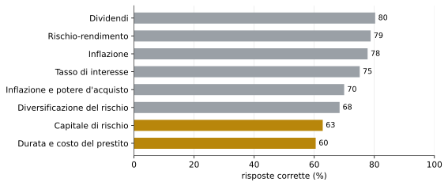
Le lacune si concentrano su due concetti. Il primo è la nozione di capitale di rischio, cioè il fatto che un apporto di capitale proprio da parte di un investitore comporta la cessione di una quota della proprietà: lo comprende il 63 per cento dei titolari. Il secondo, più rilevante per la gestione ordinaria, è la relazione tra durata di un finanziamento e costo complessivo degli interessi: risponde correttamente il 61 per cento, e su questa domanda si registra la quota più alta di “non so”. È la conoscenza più direttamente utile quando si contratta un prestito.
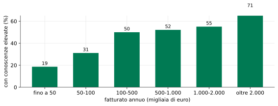
La comprensione dei concetti cresce con la dimensione dell’impresa in modo marcato: la quota di titolari con conoscenze elevate passa dal 19 per cento tra le imprese sotto i cinquantamila euro di fatturato al 54 per cento tra quelle sopra il mezzo milione. Conoscenze più alte si associano anche a un titolo di studio più elevato, all’operare sui mercati esteri e ai settori delle attività professionali e scientifiche e dell’alloggio e ristorazione.
4 Nessun divario di genere
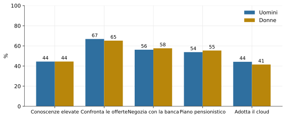
Sulle conoscenze finanziarie non si osserva alcun divario di genere, né nei punteggi effettivi né nell’autovalutazione: la quota con conoscenze elevate è identica, attorno al 44 per cento, per uomini e donne. È un risultato che distingue i microimprenditori dalla popolazione adulta, dove il divario di genere nell’alfabetizzazione finanziaria è documentato e persistente [6]. Sul piano dei comportamenti le differenze restano contenute; le titolari donne ricorrono meno al credito bancario e adottano un po’ più spesso strategie di prevenzione dei rischi climatici e tecnologie digitali avanzate.
5 Il rapporto con la banca e la previdenza
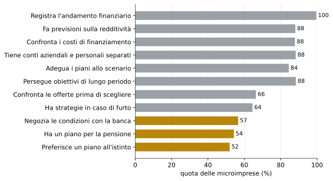
I comportamenti di gestione interna sono diffusi in modo pressoché generalizzato: quasi tutti i titolari monitorano l’andamento finanziario dell’impresa, circa nove su dieci tengono separati i conti aziendali da quelli personali, fanno previsioni sulla redditività e confrontano i costi delle diverse fonti di finanziamento.
Due comportamenti si staccano nettamente dal resto. Il primo riguarda il rapporto con il sistema bancario: solo il 57 per cento dei titolari dichiara di discutere attivamente le condizioni proposte dalla banca anziché accettare una soluzione preconfezionata. Il secondo è la previdenza: appena il 54 per cento ha riflettuto su come sostenersi economicamente dopo aver cessato l’attività. La capacità di tenere i conti in ordine, insomma, non si traduce automaticamente in un ruolo attivo nella contrattazione né in una pianificazione di lungo periodo che vada oltre l’orizzonte dell’impresa.
Anche il confronto sistematico delle offerte per i servizi finanziari e assicurativi, praticato dai due terzi dei titolari, resta meno diffuso della gestione contabile ordinaria. La propensione a negoziare è sensibilmente più alta tra chi ha genitori imprenditori, indicazione che si tratta di una competenza trasmessa più per esperienza familiare che per formazione.
6 Strumenti finanziari e assicurativi
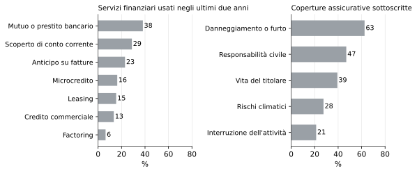
Il credito bancario non è lo strumento prevalente. Poco meno del 40 per cento dei titolari ha usato un mutuo o un prestito negli ultimi due anni, meno di un terzo uno scoperto di conto corrente; il ricorso al prestito è più frequente tra le imprese più grandi e tra quelle con una tradizione imprenditoriale familiare. La microimpresa media si finanzia in prevalenza con risorse proprie.
Sul fronte assicurativo la copertura si concentra sui rischi ordinari — il danno alla proprietà e il furto, sottoscritti dal 63 per cento — mentre resta limitata sui rischi che possono compromettere la continuità dell’attività: la polizza contro l’interruzione dell’attività è sottoscritta dal 21 per cento, quella contro i rischi climatici dal 28. È una struttura di protezione adeguata agli incidenti gestibili e scoperta sugli eventi meno frequenti ma potenzialmente gravi.
7 Tecnologie digitali e intelligenza artificiale
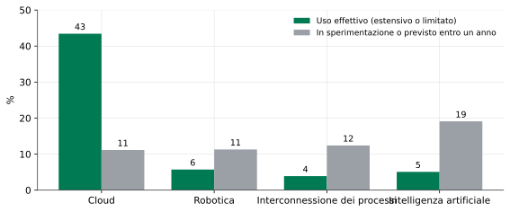
Il cloud è la sola tecnologia digitale avanzata con una diffusione ampia, al 44 per cento. Intelligenza artificiale, robotica e interconnessione dei processi sono adottate da circa il 5 per cento delle microimprese. Il dato da seguire è però la pipeline dell’intelligenza artificiale: il 19 per cento dei titolari dichiara di starla sperimentando o di prevederne l’introduzione entro un anno, contro il 12-13 per cento delle altre due tecnologie.
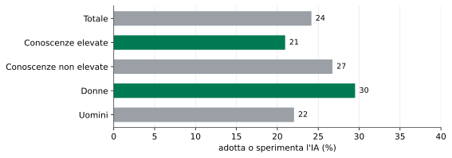
L’adozione, anche solo sperimentale, dell’intelligenza artificiale è più frequente tra i titolari con conoscenze finanziarie elevate e tra le donne imprenditrici, e si concentra nei servizi di informazione e comunicazione e nelle attività professionali e scientifiche. È una minoranza con capitale umano già elevato: se la pipeline si realizza, il divario digitale tra le microimprese tenderà ad allargarsi prima di ridursi.
8 I rischi climatici
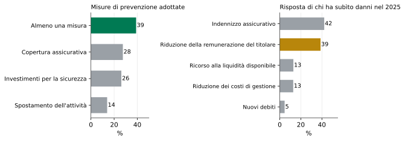
Il 39 per cento delle microimprese ha adottato almeno una misura di prevenzione dei rischi fisici legati al cambiamento climatico: investimenti per la sicurezza, coperture assicurative, in alcuni casi lo spostamento dell’attività. La propensione è più alta tra le donne imprenditrici, tra chi proviene da una famiglia con tradizione imprenditoriale e nell’agricoltura; è più bassa tra i titolari meno istruiti. È correlata soprattutto alla componente comportamentale dell’alfabetizzazione — la capacità di adattare i piani a un contesto che cambia — più che alla conoscenza dei concetti.
Nel 2025 il 6,4 per cento delle microimprese ha subìto danni da eventi climatici estremi. Tra queste, il 42 per cento ha fatto ricorso a un indennizzo assicurativo, ma il 39 per cento ha risposto riducendo la remunerazione del titolare. In assenza di una copertura ex ante, l’impatto dell’evento climatico si scarica direttamente sul reddito dell’imprenditore.
9 Una geografia dell’alfabetizzazione, non del credito
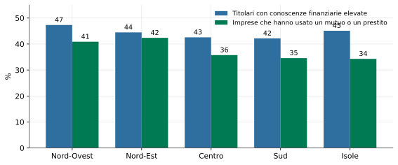
La distribuzione territoriale dell’alfabetizzazione è compressa: la quota di titolari con conoscenze elevate varia di poco più di cinque punti tra il Nord-Ovest, dove è più alta, e il Mezzogiorno. Il ricorso al credito bancario segue invece un gradiente Nord-Sud netto: le imprese che hanno usato un mutuo o un prestito passano dal 42 per cento del Nord-Est al 35 del Sud e delle Isole. Lo stesso vale per l’anticipo su fatture e per le coperture assicurative.
La lettura è che nel Mezzogiorno il minore utilizzo del credito d’impresa non dipende da una minore competenza finanziaria della domanda, che è sostanzialmente allineata al resto del Paese, ma da fattori dal lato dell’offerta — la minore densità degli sportelli e la maggiore selettività nell’erogazione. Un intervento di sola educazione finanziaria, in quelle aree, non agirebbe sul vincolo effettivo.
10 Sintesi
L’indagine restituisce un segmento imprenditoriale con conoscenze finanziarie solide, superiori a quelle della popolazione adulta e senza divario di genere, e con comportamenti di gestione interna diffusi. I margini di miglioramento si collocano in tre punti precisi.
Il primo è il rapporto con il sistema bancario. La competenza contabile non si traduce in potere contrattuale: poco più della metà dei titolari negozia le condizioni anziché accettare l’offerta della banca, e la propensione a farlo dipende più dall’esperienza familiare che dalla formazione. Su questo terreno agli strumenti di educazione finanziaria si affianca la questione della concorrenza tra intermediari e della trasparenza delle condizioni.
Il secondo è l’esposizione ai rischi di coda. Le microimprese sono assicurate contro gli incidenti ordinari ma scoperte contro l’interruzione dell’attività e il danno climatico; quando l’evento si verifica, la risposta più comune dopo l’indennizzo è la compressione del reddito del titolare. La prevenzione è legata ai comportamenti finanziari più che alle conoscenze, il che indica quale leva è efficace.
Il terzo è la geografia. Sul territorio l’alfabetizzazione è uniforme mentre l’accesso al credito non lo è: nel Mezzogiorno il vincolo non è la competenza della domanda. È una distinzione che orienta le politiche, separando ciò che si corregge con la formazione da ciò che richiede interventi sull’offerta di credito.
Nota metodologica
Questo documento nasce dall’interazione di tre componenti. L’autore definisce le domande, esercita il giudizio critico e assume la responsabilità scientifica ed editoriale del risultato. Strumenti di intelligenza artificiale generativa sono impiegati a supporto della ricerca bibliografica, della lettura, della sintesi, della riorganizzazione argomentativa e della revisione del testo. Un’infrastruttura open source sviluppata dall’autore automatizza il reperimento, l’armonizzazione e il controllo dei dati dalle fonti statistiche ufficiali, e mantiene l’elaborazione documentata e riproducibile.
Le fonti sono pubblicamente accessibili e citate con la loro denominazione ufficiale; l’analisi è pertanto integralmente auditabile e replicabile da terzi a partire da esse. Le tabelle e i grafici sono elaborazioni dell’autore: calcoli, aggregazioni, trasformazioni e scelte di rappresentazione sono attribuibili all’autore e non agli enti produttori dei dati.
La responsabilità per le fonti utilizzate, le analisi condotte, le elaborazioni effettuate, le interpretazioni proposte e le conclusioni formulate resta interamente in capo all’autore. L’intelligenza artificiale è stata impiegata come ambiente di supporto cognitivo ed editoriale, non come fonte primaria, autore autonomo o sostituto del giudizio critico.
11 Bibliografia
[1]
M. Marinucci, M. Stacchini, F. Travaglino, e P. Vassallo, «Indagini sull’alfabetizzazione finanziaria e le competenze di finanza digitale in Italia: piccole imprese», Banca d’Italia, set. 2026.
[2]
A. D’Ignazio, P. Finaldi Russo, e M. Stacchini, «Micro-entrepreneurs’ financial and digital competences during the pandemic in Italy», Banca d’Italia, 724, 2022.
[3]
OECD/INFE, «OECD/INFE Core Competencies Framework on Financial Literacy for MSMEs», OECD, 2018.
[4]
Banca d’Italia, «Indagine sull’alfabetizzazione finanziaria e le competenze di finanza digitale delle piccole imprese: microdati e questionario, edizione 2025». Collana Statistiche, 2026.
[5]
Banca d’Italia, «Indagini sull’alfabetizzazione finanziaria e le competenze di finanza digitale in Italia: piccole imprese. Note metodologiche», Banca d’Italia, set. 2026.
[6]
Banca d’Italia, «Indagini sull’alfabetizzazione finanziaria e le competenze di finanza digitale in Italia: adulti», Banca d’Italia, lug. 2026.